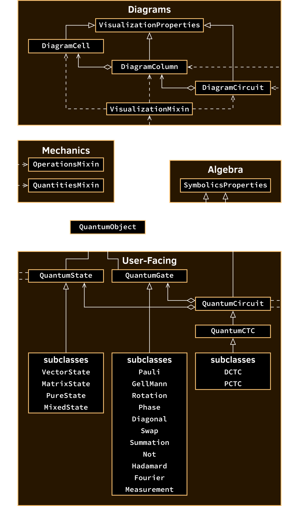
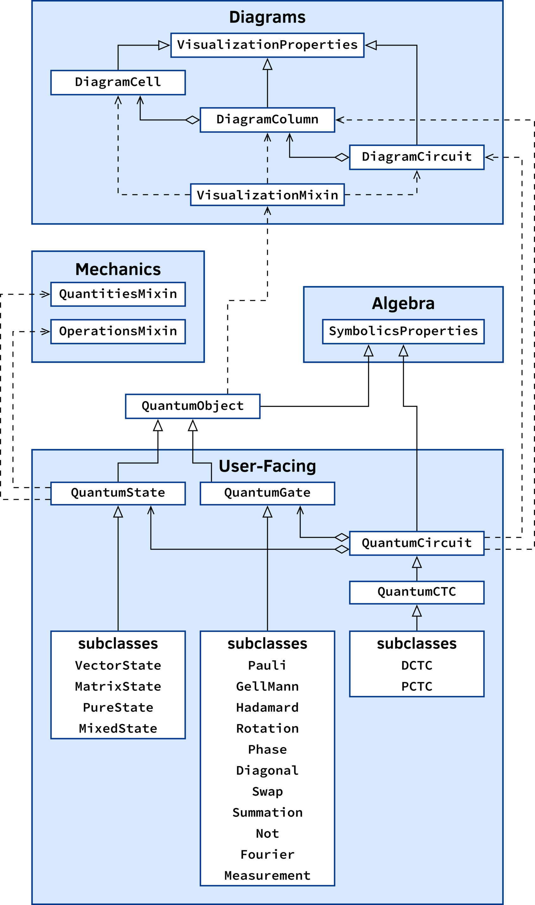

Classes and their relationships#
Qhronology presents an innovative approach to describing both simulations of quantum mechanics and the various associated mathematical constructs and processes which collectively form the foundation of contemporary quantum physics. While this is not novel in the world of quantum libraries and toolkits, Qhronology is unique in how it places great emphasis on modularity in its descriptions of quantum states, gates, and circuits. Perhaps the best way by which this aspect can be appreciated is to gain a deeper understanding of the package’s interface, specifically that manifested by its user-facing classes.
Figure 7 contains a simplified UML class diagram, depicting the majority of the package’s class objects and the relationships (including inheritance and composition) between them. As shown in this diagram, the QuantumObject class is central to Qhronology’s functionality. Being an abstract base class (and so is not meant to be instantiated itself), QuantumObject constitutes the common substructure upon which all primitive quantum-mechanical objects are built. Specifically, this consists of the two main classes:
QuantumState: for creating quantum states. Instances have mutable internal states.QuantumGate: for creating quantum gates. Instances have immutable internal states.
These are implemented as extending subclasses, where each adds to and modifies the functionality of the QuantumObject base class primarily through class properties and methods.Instances of these derived classes provide exhaustive descriptions of their corresponding quantum constructs: in addition to containing a precise mathematical specification (including metadata regarding symbols and their associated constraints), they can be inspected, visualized, and, in the case of quantum states, transformed (mutated) via quantum operations. Here, QuantumObject provides the core matrix, symbolic, and visualization machinery (in addition to all other internal implementation details) required by Qhronology’s programmatic description of fundamental quantum objects. Thus, as both states and gates are simply just specific types of such objects, then using the QuantumObject class as a shared foundation is a natural arrangement—one which greatly simplifies the project’s source code by directly reducing redundancy.
{kind=link}

{kind=link}

Circuit composition#
Having gained an appreciation for Qhronology’s implementation of quantum states and gates, we now turn our attention to that of quantum circuits. In standard quantum theory, a circuit can be thought of as being essentially an assembly of states and gates that corresponds to a mathematical description of some specific quantum-mechanical process. This ontology is reflected in Qhronology’s circuit construction—facilitated by the QuantumCircuit class—whereby circuit instances are created by passing QuantumState and QuantumGate objects to the appropriate arguments in the class constructor (or, alternatively, to the appropriate properties post-instantiation). In a pragmatic (albeit reductive) sense, QuantumCircuit objects are merely containers for their various elementary components (while also possessing other necessary functionality). Of all the class’s abilities, the most defining is the computation of the output state (of the circuit assembled from its state and gate components), which may be returned as either a SymPy matrix or a QuantumState instance.
Building upon QuantumCircuit, Qhronology’s QuantumCTC class provides the core scaffolding by which quantum circuits that possess CTCs are described. As far as the programmatic specification of such circuits is concerned, the main practical difference between them and their CTC-free counterparts is that the quantum systems of the former are not exclusively chronology-respecting—those which comprise the CTC subsystem are, by definition, chronology-violating. Qhronology recognizes this sentiment, and accordingly QuantumCTC extends the QuantumCircuit class only by the addition of the systems_respecting and systems_violating constructor arguments (along with homonymous class properties).
Instances of the QuantumCTC class, constructed in much the same way as QuantumCircuit instances (e.g., the passing of states and gates to the class constructor’s relevant arguments), provide descriptions of specific interactions (defined by the given gates) between the CR and CV subsystems (with input state given on the former). By itself however, the QuantumCTC class is unable to compute the output states on these subsystems, as this can only be accomplished within the context of a particular quantum prescription. Such models can be implemented simply as subclasses of QuantumCTC, wherein the appropriate machinery is granted to the class methods which require it. Indeed, Qhronology provides the two foremost prescriptions, D-CTCs and P-CTCs, as the QuantumDCTC and QuantumPCTC classes, respectively. It is these subclasses which provide the capabilities for calculating the specific predictions of their associated quantum prescription of antichronological time travel.
Modularity and design patterns#
Qhronology provides a flexible domain-specific framework for theoretical quantum mechanics, with the usage pattern of its circuit creation in particular being a highly modular procedure. As part of this, the program places great emphasis on the ability to define quantum primitives outside of the context of any circuit description. In other words, Qhronology treats individual states and gates as complete, fundamental, and independent objects.
The standard pattern of Qhronology’s circuit instantiation (see sec:docs_circuits Circuits) consists primarily of the passing of pre-existing state (QuantumState) and gate (QuantumGate) instances to the circuit (QuantumCircuit) constructor’s arguments. With an assembled circuit, one can then extract its total (composite) input and output states as QuantumState instances, as well as the entire gate sequence as a single amalgamated QuantumGate instance. These extracted objects are no different from any other user-created states or gates in Qhronology, and so can be inspected, modified, and incorporated into other circuits. Qhronology’s claim to extensive modularity stems primarily from its ability to both assemble and extract elementary objects, which themselves can be subsequently used in a variety of contexts.
Although the typical procedure of creating circuits within the framework does not precisely resemble any single design pattern, it does possess some traits from what is canonically known as the composite pattern—a software-engineering design pattern [1] characterized by the aggregation of elementary objects into a single, more complex object. Qhronology’s particular structure however diverges from this pattern in one important way: while the QuantumCircuit class facilitates the composition of fundamental objects (states and gates) into a more complex container (from which both all kinds of fundamental objects can be obtained), it itself cannot be further composed into other objects, nor does it share the same interface as its constituent objects. Nonetheless, the program’s process of creating circuits (almost) completely from pre-defined primitives at instantiation is a distinctly novel approach, one that is in stark contrast with the builder pattern—quantum circuits constructed via a succession of methods called on an initially empty quantum circuit class instance—used in other Python-based quantum projects, including IBM’s Qiskit [2, 3], Google’s Cirq [4], Xanadu’s PennyLane [5, 6], and the community-run QuTiP [7, 8].
References
E. Gamma, R. Helm, R. Johnson, and J. Vlissides, Design Patterns: Elements of Reusable Object-Oriented Software, Addison-Wesley Professional, 1994.
IBM and the Qiskit Community, “Qiskit”, 2017. URL: https://www.ibm.com/quantum/qiskit, Source code: Qiskit/qiskit
A. Javadi-Abhari, M. Treinish, K. Krsulich, C. J. Wood, J. Lishman, J. Gacon, S. Martiel, P. D. Nation, L. S. Bishop, A. W. Cross, B. R. Johnson, and J. M. Gambetta, “Quantum computing with Qiskit”, arXiv [quant-ph], June 2024. DOI: 10.48550/arXiv.2405.08810
Google and the Cirq Community, “Cirq”, 2018. URL: https://quantumai.google/cirq, Source code: quantumlib/Cirq
Xanadu and the PennyLane Community, “PennyLane”, 2018. URL: https://pennylane.ai, Source code: PennyLaneAI/pennylane
V. Bergholm, J. Izaac, M. Schuld, C. Gogolin, S. Ahmed, V. Ajith, M. S. Alam, G. Alonso-Linaje, B. AkashNarayanan, A. Asadi, J. M. Arrazola, U. Azad, S. Banning, C. Blank, T. R. Bromley, B. A. Cordier, J. Ceroni, A. Delgado, O. D. Matteo, A. Dusko, et al., “PennyLane: Automatic differentiation of hybrid quantum-classical computations”, arXiv [quant-ph], July 2022. DOI: 10.48550/arXiv.1811.04968
The QuTiP Community, “QuTiP”, 2012. URL: https://qutip.org, Source code: qutip/qutip
N. Lambert, E. Giguère, P. Menczel, B. Li, P. Hopf, G. Suárez, M. Gali, J. Lishman, R. Gadhvi, R. Agarwal, A. Galicia, N. Shammah, P. Nation, J. R. Johansson, S. Ahmed, S. Cross, A. Pitchford, and F. Nori, “QuTiP 5: The Quantum Toolbox in Python”, Physics Reports, 1153:1–62, January 2026. DOI: 10.1016/j.physrep.2025.10.001